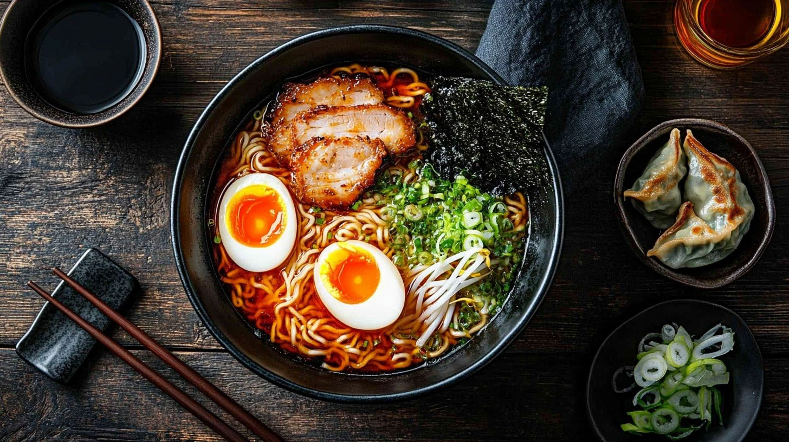

Home
Ramen Recipe

Description
This simple ramen recipe is very delicious and fun to follow! It's a quick way to elevate instant ramen.
Ingredients:
- 1 tablespoon sesame oil
- 3 teaspoons grated ginger
- 4 teaspoons grated garlic
- 4 cups broth
- 2 packages of instant ramen
- 1/2 cup chopped scallions
- 1 soft-boiled egg
- Sriracha to taste
Steps:
- Heat the sesame oil in a large skillet over medium low heat. Add garlic and ginger; cook until soft and fragrant, about 2 minutes.
- Add the broth and bring to a simmer for 10 minutes.
- Add the instant noodles to the broth and simmer for an additional 5 minutes, or until the noodles have softened.
- Add the scallions and stir to combine.
- Remove from heat and top with the egg as well as Sriracha to taste.